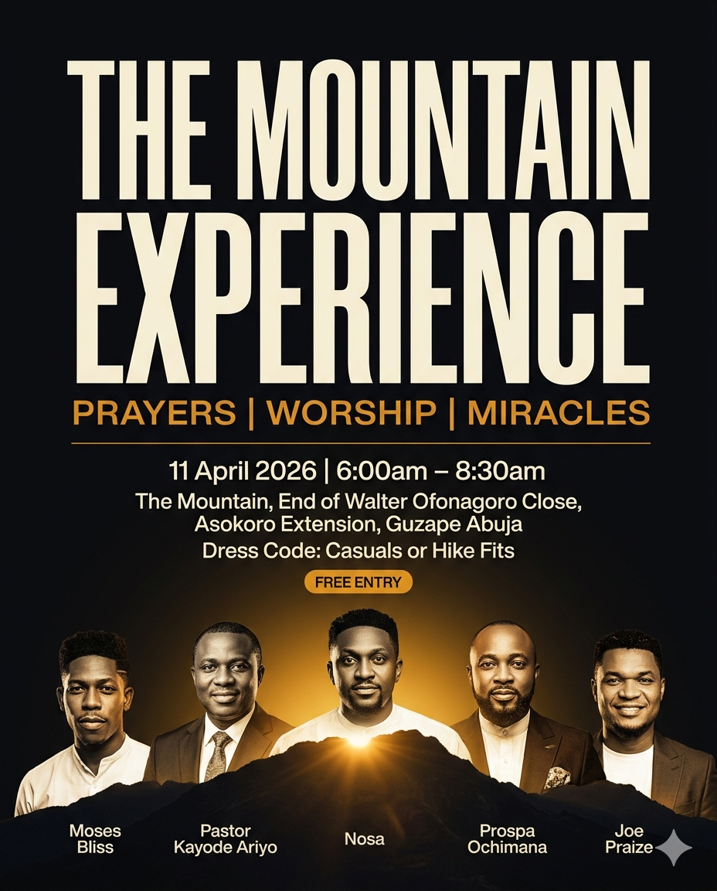

01 / CREATIVE✳
Graphic
Design
Visual identities, logo concepts, promotional graphics and communication materials shaped around a clear message.
BRAND IDENTITY · VISUAL COMMUNICATIONExplore work ↗
MULTIDISCIPLINARY CREATIVE & ENGINEERING STUDENT NIGERIA
I'm Promise Olutola — a graphic designer, web development learner and Electrical/Electronics Engineering student exploring the space between creativity, technology and practical problem-solving.
Curiosity across disciplines.
Care in every detail.
THREE FIELDS OF INTEREST
ONE CONTINUOUS LEARNING JOURNEY
BUILT WITH INTENTION ✳
01 — THE PERSON
I enjoy turning ideas into things people can see, use and learn from.
My journey currently spans visual design, front-end web development and Electrical/Electronics Engineering. I approach each field as a craft: learn the fundamentals, practise deliberately, document the process and keep improving.
02 — WHAT I DO
A snapshot of the skills I'm building and the work I'm able to show today.
Visual identities, logo concepts, promotional graphics and communication materials shaped around a clear message.
Responsive web experiences built while developing my front-end skills in HTML, CSS and JavaScript.
Foundational domestic installation, maintenance and repair training, supported by classroom learning and supervised practical experience.
03 — SELECTED WORK

An event poster concept built around atmosphere, hierarchy and a strong visual focal point.

A wordmark exploration focused on confident typography and a distinctive brand presence.
A live web project developed as part of my ongoing front-end learning and building practice.
Project descriptions are kept concise here. Individual case studies can be added as each project's brief, process and outcomes are documented.
04 — LEARNING & EXPERIENCE
UNIVERSITY EDUCATION
Federal University of Technology, Akure (FUTA). Academic study in engineering fundamentals alongside independent creative and digital projects.
TECHNICAL TRAINING
Electrical Installation, Maintenance and Repair training, combining classroom instruction with practical learning. My portfolio will document specific tasks and projects as verified records and photographs become available.
INDEPENDENT PRACTICE
Developing graphic design work, brand identity concepts and web projects while building a stronger, more considered creative practice.
Scope matters. Electrical content on this site represents my current training and foundational experience. It is not a claim of professional licensing or competence in large-scale installations.
05 — GET IN TOUCH
For design and web project enquiries, collaborations or conversations about my work, feel free to reach out.